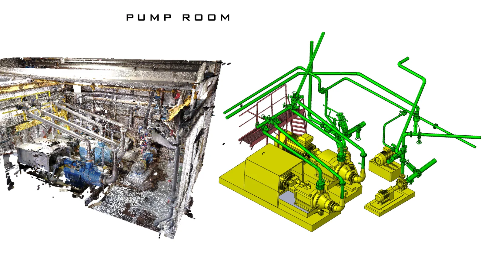
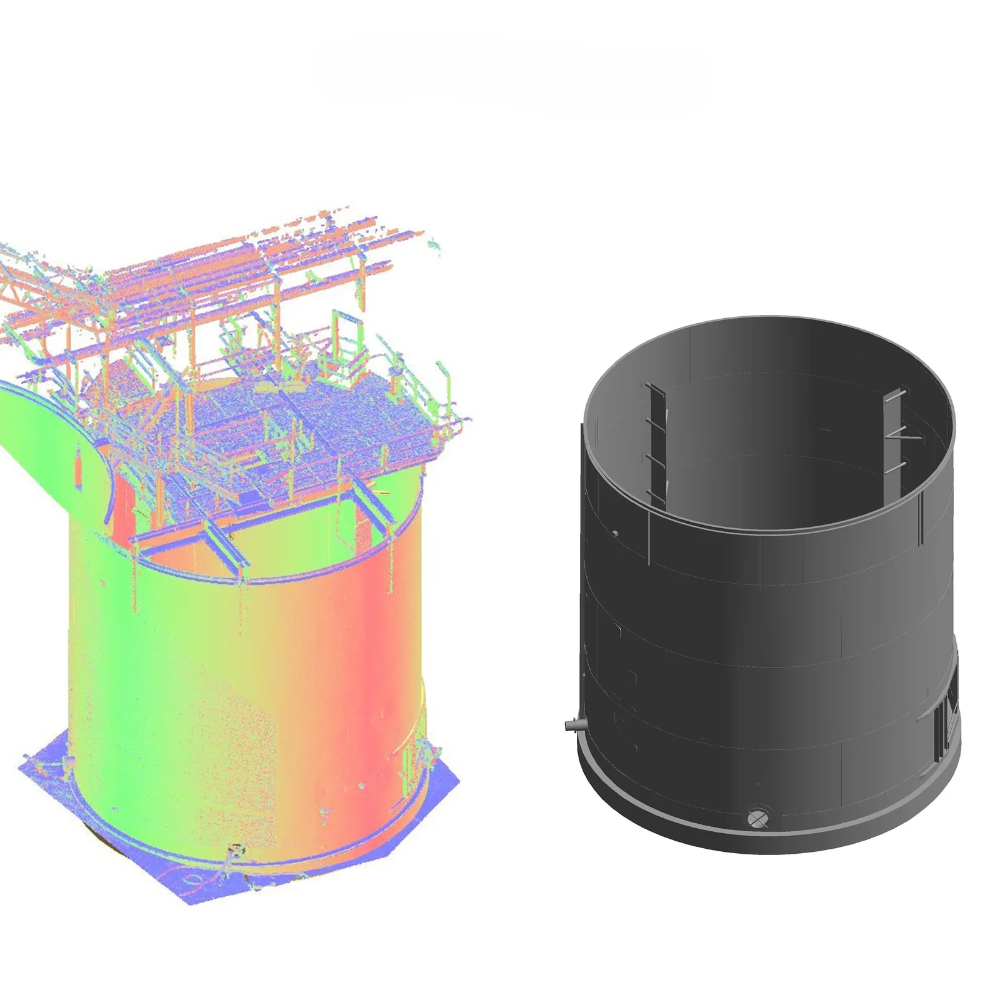
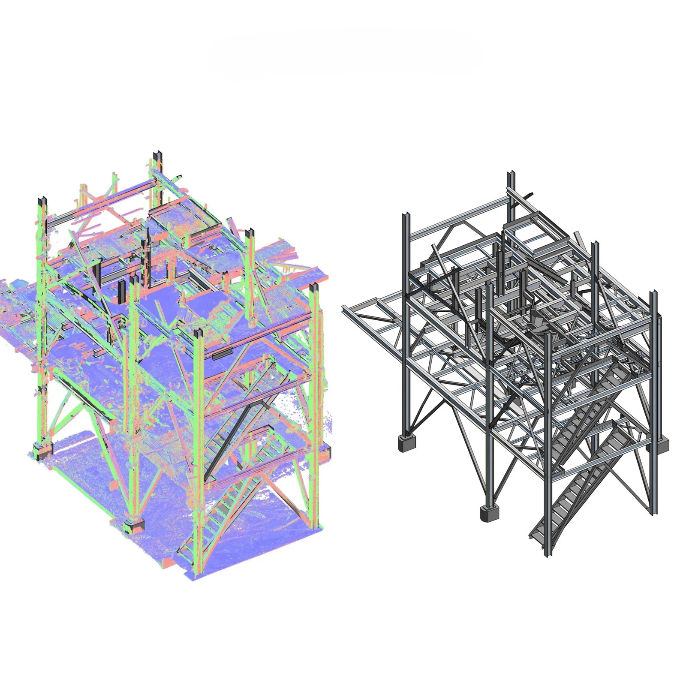

Most buildings and plants don't match their drawings. Pipes get rerouted, equipment is replaced, walls move, and the "as-built" drawings were never updated, if they existed at all. When it's time to renovate, expand, retrofit or manage the facility, designers end up working from guesses.
Scan to BIM fixes this by capturing the real site with laser scanners and converting that data into an accurate Building Information Model (BIM). VShark handles both parts: we laser-scan the site, or work from your existing point cloud, and turn it into a clean, usable Revit model.
What is Scan to BIM?
Scan to BIM is a two-stage process:
- Laser scanning: a terrestrial laser scanner on a tripod is set up at several positions around the site. Each scan captures millions of points. Together they form a point cloud: a precise 3D record of every wall, beam, pipe, valve and piece of equipment.
- BIM modelling: engineers use the point cloud as a reference to model the site in Autodesk Revit, creating intelligent objects (walls, columns, pipes and fittings, equipment) rather than just geometry.
VShark can deliver both stages, or only the modelling if you already have scan data.

Where Scan to BIM is used
- Plant rooms and MEP retrofits: routing new pipework and ducts through crowded existing services without clashes
- Industrial plants: tank farms, pump skids, crushers and conveyors, for expansion and maintenance planning
- Commercial and residential renovation: accurate floor plans, sections and elevations of existing buildings
- Facility management: a digital record of assets for operations and maintenance
- Heritage buildings: documenting complex historic structures before restoration
In the UAE, where BIM is increasingly expected on government and large private projects, accurate as-built models are now essential for fit-outs and retrofits. In India, industrial clients use Scan to BIM to plan plant expansions and brownfield projects safely.

Level of Development (LOD): how detailed should the model be?
BIM models are specified by LOD. Agreeing this up front controls both cost and usefulness:
| LOD | What's modelled | Typical use |
|---|---|---|
| LOD 200 | Approximate size and location of main elements | Early planning, massing |
| LOD 300 | Accurate size, shape and location of elements | Design coordination, most retrofit projects |
| LOD 400 | Detailed elements, including connections and fittings | Fabrication, detailed MEP and piping work |
| LOD 500 | Verified as-built, with asset information | Facility management, handover |
For most plant-room and building retrofit projects, LOD 300 is the sweet spot. Piping and steel fabrication may need LOD 400 in specific areas.
What you provide, and what you get
You provide: site access for our scanning team, or a registered point cloud of the site from your own survey team (E57, RCP/RCS, LAS or PTS), along with any existing drawings.
You get: an Autodesk Revit model (RVT) built to the agreed LOD and checked against the point cloud, plus IFC export and 2D plans, sections and elevations where needed. If we scan the site, you also get the registered point cloud (E57 or RCP).

Why not just measure by hand?
- Speed: a crowded plant room that takes days to tape-measure can be scanned in hours
- Completeness: you capture everything, including items you didn't know you'd need later
- Safety: fewer people climbing around live equipment
- Accuracy: far fewer surprises during installation, which means less rework and fewer site variations
How a Scan to BIM project runs with VShark
- Scope: areas to model, LOD, Revit template or standards, and deadlines
- Scanning or data check: we scan the site on site, or review your point cloud for coverage, registration quality and density and flag any gaps before modelling starts
- Modelling: the Revit model is built to the agreed LOD
- QA: the model is checked against the point cloud
- Delivery: RVT model, plus a walkthrough with your team
Scan to BIM services in India and the UAE
VShark Solutions scans sites and builds Revit models for industrial and building projects, working from Coimbatore for clients across India and the UAE. Our team scans on site in both countries, and existing point clouds can be shared online from anywhere. See our Scan to BIM work in the portfolio, or learn more about our Scan to BIM service.